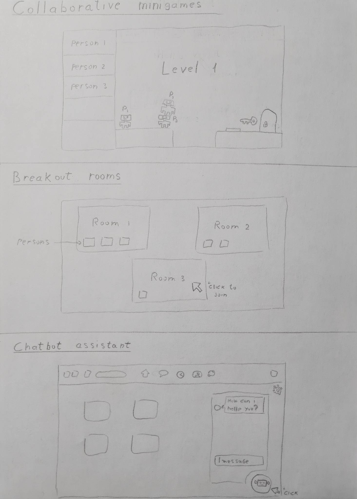

For delivering an academic presentation, the existing affordances and interaction flows for Zoom and Microsoft Teams are fairly similar. Both platforms offer the ability to share your screen, use a virtual background, and utilize various annotation tools to make the presentation more interactive. However, there are some improvements that can be made to enhance the user experience.
When it comes to text-only interaction in a Command Line Interface (CLI), visual metaphors and idioms are replaced by text-based commands. To improve the experience of text-only interaction, clear and concise instructions and feedback are essential. Consistent and intuitive command syntax can also help reduce cognitive overload.
Visual metaphors and idioms used in graphical user interfaces (GUIs) for Zoom and Microsoft Teams include:
To suggest a similar idiom for a text-only interaction, we could use the phrase "signal to speak" or "indicate to speak" to describe the action of indicating that we want to speak during a CLI-based meeting.
To suggest a similar idiom for a text-only interaction, we could use the phrases "silence/unsilence" to describe the action of turning off/on your microphone.
To suggest a similar idiom for a text-only interaction, we could use the phrase "instant messaging" or "text chat" to describe the feature that allows users to send messages to other participants.
Cognitive overload can occur when the user is presented with too much information or too many options, resulting in difficulty in processing and decision making. Special conditions/contexts that can exacerbate cognitive overload include:
Let's consider four UI/UX improvements for Zoom and Microsoft Teams that can optimize the experience for the main audience across different platforms:
Problem: Inconsistent navigation and interface design between platforms can make it difficult for users to switch between devices and maintain a consistent experience.
Solution: To use a consistent design system and navigation structure across all platforms, with common visual elements and interaction patterns to help users quickly acclimate to the platform on any device. This can include consistent use of color, typography, icons, and spacing, as well as a common hierarchy of navigation elements.
Problem: Participants' video feeds can be distracting or overwhelming during large meetings
Solution: Provide the option for the user to turn off video feeds for participants who are not speaking or minimize the video feeds to thumbnail size. This can help the presenter and participants focus on the presentation and reduce visual distractions.
Problem: Overwhelming or confusing interface with too many features and options can lead to cognitive overload and reduced productivity.
Solution: Streamline the user interface and prioritize the most important features, making it easy for users to find and use the tools they need most frequently. This can include simplifying the navigation structure, removing unnecessary features or options, and providing clear visual cues and guidance for users to help them accomplish their goals.
Problem: Poor accessibility and usability for users with disabilities can create barriers to participation and reduce inclusivity.
Solution: Prioritize accessibility features and ensure that the platform is usable for all users, regardless of their abilities or disabilities. This can include features such as closed captioning, sign language interpretation, screen reader support, and high-contrast modes, as well as ensuring that the platform is navigable with keyboard shortcuts and other assistive technologies.
Empiric laws such as Fitts', Hick's, and Steering, were originally developed for single device interaction. However, in the context of multi-device interaction, these laws can still be applied, but with some adaptations.
For example, Fitts' law states that the time required to move a pointing device to a target area is a function of the distance to the target and the size of the target. In the context of multi-device interaction, however, there may be multiple targets spread across different devices, each with different sizes and distances. As a result, the law may need to be adapted to consider the relative sizes and distances of targets across devices, and the time required to switch between devices.
Similarly, Hick's law states that the time required to make a decision is a function of the number of options available. In the context of multi-device interaction there may be multiple options spread across different devices, each with different levels of accessibility and visibility. As a result, the law may need to be adapted to consider the cognitive load of switching between devices and the visibility of different options.
Steering law states that the time required to navigate a target is a function of the ratio between the distance to the target and the width of the target. In the context of multi-device interaction, however, there may be multiple targets spread across different devices, each with different widths and distances. As a result, the law may need to be adapted to consider the relative widths and distances of targets across devices, and the time required to switch between devices.
Finally, three new features that can be added to improve the experience are: collaborative minigames that allows users to play simple and fun games where they have to work together, a breakout room feature that enables participants to have smaller group discussions within a larger meeting, and a virtual assistant that can answer questions, provide information, and take notes during the meeting.
